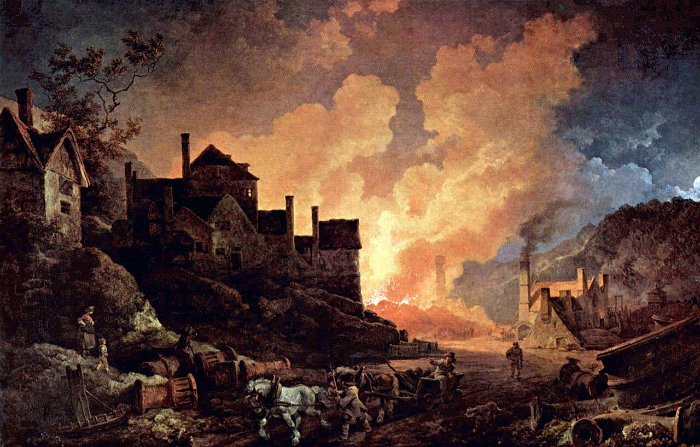
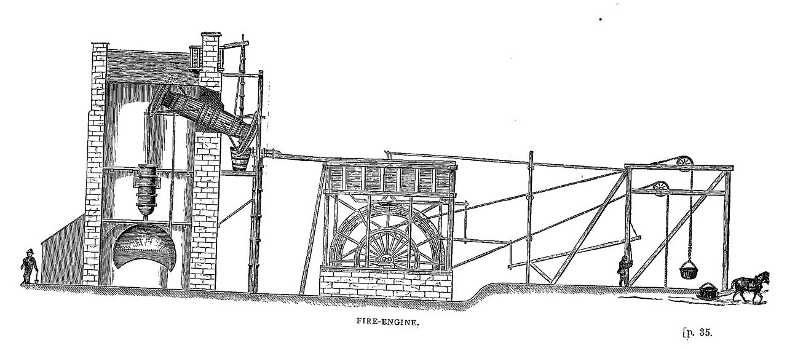
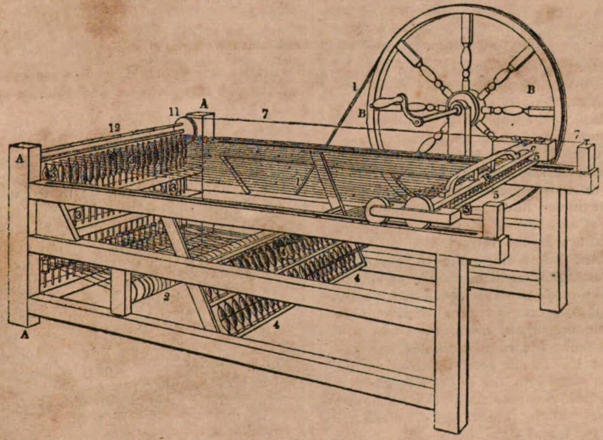
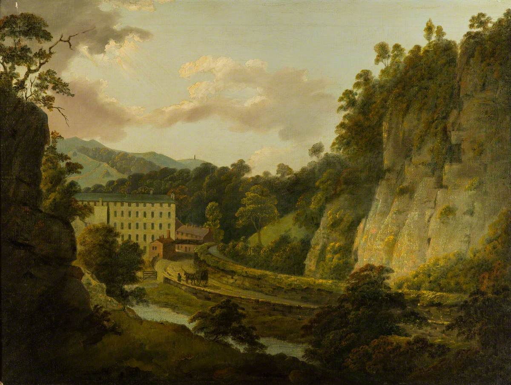
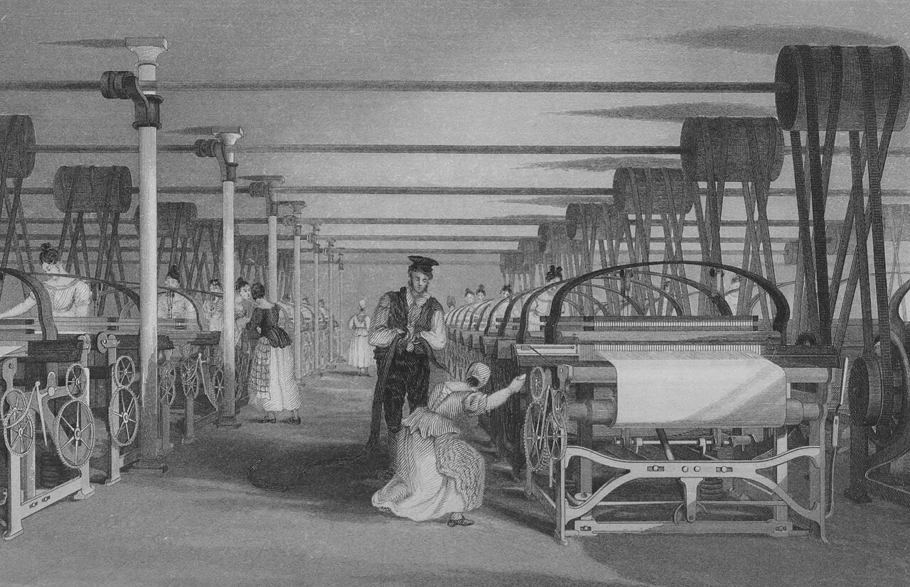
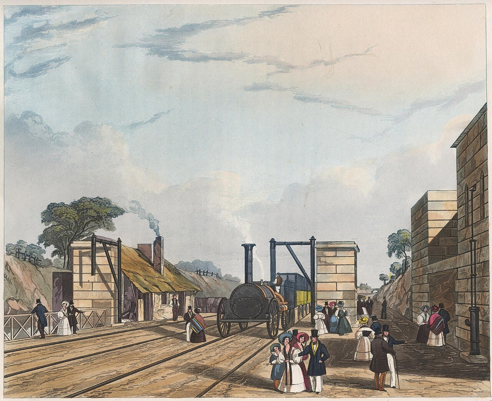
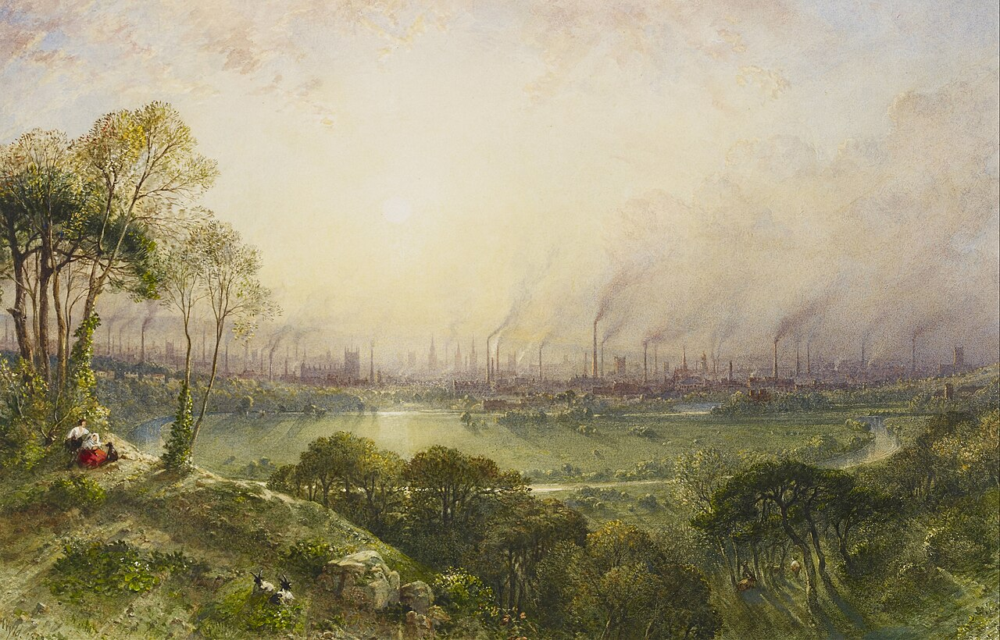

歴史・地理 History & Geography産業革命は、 なぜ イギリスで 起きた？ 18世紀、世界の綿布の多くを作っていたのは、インドや中国などアジアの国々でした。それなのに機械と蒸気機関の時代は、ヨーロッパの島国イギリスから始まります。石炭の産地の地図と生産のグラフで、カギをにぎった「人の手間賃と石炭の値段」を確かめてみませんか。
2026.11.18 UP 約8分で読める 文：SOMOSOMO編集部
絵：「夜のコールブルックデール」／ラウザーバーグ（1801年、パブリックドメイン）
Previously
前回は、「国民」が生まれた話でした。1792年、フランスの指揮官が「国民万歳」と叫び、1793年には国民総動員令が出されます。ナポレオンの征服への反発で「国民」の考えは各地に広がり、1815年のワーテルローの戦いをへて、1861年にイタリア王国、1871年にドイツ帝国が宣言されました。
イングランド中部ティプトン、1712年。炭鉱に、火をたいて動く大きなポンプが据えつけられました。トマス・ニューコメンが作った蒸気機関です。坑道にしみ出す水をくみ上げ、もっと深く掘れるようにする機械でした。
ナポレオンと最後まで戦ったイギリスでは、その少し前から大きな変化が始まっていました。1760年ごろから、糸をつむぐ仕事が機械に移り、機械を動かす力が、人や水車から石炭と蒸気に変わります。のちに産業革命と呼ばれる変化です。
けれども18世紀、綿布づくりの中心はインドや中国でした。産業革命は、なぜイギリスで起きたのでしょうか 。
In a word
賃金が高く石炭が安く 、人の仕事を機械に置きかえると得 だったから。
01
Fire Engines
石炭を 掘るための機械が、 工場を動かす 力になった
ニューコメンの機関は、筒に入れた湯気を水で冷やして縮め、外の空気に押されて下がるピストンの力で、ポンプを動かします。
いまの目で見れば、ひどく燃料を食う機械でした。それでも、石炭がいくらでもある炭鉱の入り口なら、燃料代はほとんどかかりません。1733年までに、ヨーロッパの各地で110台が作られました。

炭鉱で働く「火の機関」 1892年の本『炭坑と坑夫』の挿絵で、左の建物の下に、ニューコメン式とみられる機関の丸い釜が見えます。写真：Fire-engine ／作者不明（1892年、パブリックドメイン）
鉄づくりでも、石炭が木炭に代わります。1709年、エイブラハム・ダービーがコールブルックデールの溶鉱炉で、石炭を蒸し焼きにしたコークスを使い始めました。扉の絵は、そのコールブルックデールの夜の姿です。
スコットランドのグラスゴー大学で機関の模型を直していたジェームズ・ワットは、湯気を冷やす場所を筒の外に分けることを思いつき、1769年に特許をとりました。筒を毎回冷やしては温め直す無駄がなくなり、同じ量の石炭でできる仕事は、およそ2倍になります。
ワットの機関は1776年に売り出され、1781年には、上下の動きを回る動きに変えるしくみも加わりました。機関は炭鉱を出て、工場の機械を回せるようになります。石炭の生産は、1830年には1700年の10倍あまりに増え、鉄道の時代にはさらに伸びていきます（Fig.01）。
Fig.01 イギリスの 石炭の生産 （1700〜1910年）
見どころは、1830年の鉄道の開通のあと、とくに1850年からの30年で線が急に立ち上がり、1910年には1830年の約9倍になったこと。単位の違い（ロングトンとメートルトン）は小さいので、同じ目盛りで描きました。出典：History of coal mining・Economic history of the United Kingdom（Wikipedia）。
02
The Calico Challenge
インドの綿布に 追いつこうとして、 糸つむぎが 機械になった
17世紀の末、東インド会社がインドから運ぶ、安くて色あざやかな綿布キャラコが大流行しました。羊毛や絹の業者は反発し、議会は1700年と1721年の法律で、綿布の輸入や販売の多くを禁じます。
それでも国の中で綿布を作る動きが始まりました。ただ、インドの職人の手間賃はイギリスの5分の1ほど。手作業では太刀打ちできません。
1764〜65年ごろ、北西部ランカシャーのジェームズ・ハーグリーヴズが「ジェニー紡績機」を考えました。1つの車輪を回すと、8本の紡錘（糸によりをかけて巻きとる棒）がいっしょに回ります。

ジェニー紡績機 1836年の雑誌に載った改良型の図で、右の車輪を回すと、台の上の紡錘がいっせいに回ります。写真：Penny Magazine 1836 269 Hargreaves' Spinning Jenny ／作者不明（1836年、パブリックドメイン）
1769年、リチャード・アークライトが水車で動く「水力紡績機」の特許をとり、1771年にはクロムフォードに綿糸の工場を開きました。機械を収めるために建てた、最初期の工場の1つです。1774年に綿布の法律がなくなると、こうした工場に、お金が一気に流れこみました。

谷間の工場 画家ジョゼフ・ライトがのちに描いた、崖と森にはさまれたアークライトの工場の一つです。写真：Arkwright's Mills ／ジョゼフ・ライト（1795〜96年ごろ、パブリックドメイン）
工場では、時計が暮らしを決めました。クロムフォードでは朝6時と夕方6時に門が閉まり、遅れれば2日分の賃金を失いました。1788年、水力の綿糸工場143か所では働き手の3分の2が子どもで、1日12〜14時間働くこともありました。
子どもの賃金は、大人の男性の1〜2割ほどでした。9歳未満の子どもを綿工場で働かせることを禁じる法律は1819年にでき、1833年の工場法で、絹をのぞく繊維工場全体に広がりました。やがて布を織る仕事も、蒸気で動く力織機に移っていきます。

力織機が並ぶ工場 1835年の本に載った力織機の工場で、天井の長い軸とベルトが、機関の力を1台1台に配っています。写真：Powerloom weaving in 1835 ／T・アロム（原画）、J・ティングル（版画）（1835年、パブリックドメイン）
03
Why Britain?
答えは 1つではないが、 「高い賃金と 安い石炭」が 有力だ
では、なぜイギリスだったのでしょうか。有力な説の1つは、イギリスの経済史家ロバート・アレンのものです。18世紀のイギリスは、働く人の賃金が高く、燃料の石炭がとても安い国でした。それなら、人の手間を機械と石炭に置きかえるほど得をします。
ここでいう「高い」は、インドや中国などとくらべての話です。賃金の安いインドでは、同じ機械を入れても得は小さくなります。アレンは、この値段の違いこそが、イギリスで始まった理由の土台だと考えました。
石炭のありかも見のがせません。イギリスの炭田の多くは、工業の町のすぐそばにありました（Fig.02）。中国の大きな炭田は北西部にあり、12〜14世紀に人と産業の中心が南へ移ったあとは、人や工場の集まる場所から遠く離れていた、という指摘があります。
Fig.02 炭田と、 産業革命の おもな舞台
北海
アイルランド海
ティプトン
コールブルックデール
クロムフォード
マンチェスター
リヴァプール
スコットランド中部炭田
北東部炭田
ランカシャー炭田
ヨークシャー炭田
中部炭田
南ウェールズ炭田
ロンドン
グラスゴー
本文に出る場所
おもな炭田（おおよその位置）
そのほかの町
リヴァプール＝マンチェスター鉄道（1830年）
見どころは、本文に出る町（赤い点）が、炭田（赤い輪）のすぐそばに集まっていること。
綿布の需要と海外の市場 インドの綿布で生まれた人気に加え、1800年には国で作った綿布の3分の2が輸出されていました。
植民地と奴隷貿易 アメリカ大陸の農園の綿花や砂糖、奴隷貿易の利益が工業を支えた、という説があり、どこまで決め手だったかは議論が続いています。
特許と議会 1775年、議会はワットの特許を1800年までのばす法律を通しました。発明でもうける権利を守るしくみと政治の安定があり、港や運河、お金を出す人もいました。
アレンの説にも反論はあります。2018年の研究では、紡績や建設で働く人の賃金は、それほど高くなかったという結果が出ました。石炭は外国から買うこともできた、という指摘もあります。
まとめると、高い賃金と安い石炭のもとで、人の仕事を機械に置きかえる得がイギリスでは大きく、そこにほかの条件が重なった ──いまは、そう考える研究者が多いようです。1人の天才や1つの発明だけで起きた変化ではありませんでした。
04
Into the World
鉄道が、 変化を イギリスの外へ 運んだ
1830年9月15日、港町リヴァプールと、綿工業の町マンチェスターを結ぶ鉄道が開通しました。都市と都市を結ぶ世界初の鉄道で、すべての列車を蒸気機関車が引き、時刻表どおりに走りました。港に着いた綿花を工場へ運び、できた綿布を港へ送り返す道です。
時刻表で走る列車は、町ごとにばらばらだった時計をそろえる必要も生みました。

開通したばかりの鉄道 1831年に出たリヴァプール＝マンチェスター鉄道の版画で、線路のすぐわきを人々が歩いています。写真：Coloured View on the Liverpool and Manchester Railway, 1831 ／T・ベリー（原画）、S・G・ヒューズ、H・パイオール（版画）（1831年、パブリックドメイン）
イギリスは職人の出国を禁じていましたが、1789年、紡績工場で見習いをしていた若者サミュエル・スレーターがアメリカへ渡り、1793年にロードアイランドで紡績工場を開きます。
ヨーロッパでは、石炭に恵まれたベルギーが、1830年の独立のあと2番目の工業国になります。ドイツでも1840年代には、おもな都市が鉄道で結ばれます。
こうして、1760年ごろイギリスで始まった機械と蒸気機関による変化は、19世紀に、鉄道や蒸気船とともにヨーロッパやアメリカへ広がりました 。
遅れて加わったのが日本です。明治維新のあと、政府は工場づくりを自ら進めます。1871〜73年には岩倉使節団が欧米を回り、マンチェスターなどの工場も見て歩きました。
富岡製糸場の東置繭所 1872年に群馬県で開かれた官営の工場の倉庫で、機械と技術者はフランスから招きました。写真：Tomioka Silk Mill East Building ／C1815（2014年、CC0）
原因の議論は続いていても、変化の大きさははっきりしています。綿工業の中心マンチェスターの人口は、1771年から1831年までに6倍にふくらみました。家は足りず、汚れた下水で川の色まで変わり、工場の煙が空をおおいました。

煙の町マンチェスター 1852年に郊外の丘から見たマンチェスターで、地平線に並ぶ煙突の煙が町をおおっています。写真：Manchester from Kersal Moor, with rustic figures and goats ／ウィリアム・ワイルド（1852年、パブリックドメイン）
05
By the Numbers
数字で見る 産業革命
約 500倍 1830年代までに、機械が綿糸をつむぐ働き手1人あたりの生産を高めた倍率Industrial Revolution（Wikipedia）による
最大 10分の1 1830年代までの改良で、蒸気機関が同じ仕事に使う燃料は、それまでの5分の1〜10分の1にまで減ったIndustrial Revolution（Wikipedia）による
22.9% 1870年代、世界の工業の生産に占めたイギリスの割合。1830年は9.5%だったEconomic history of the United Kingdom（Wikipedia）による
Here's the Fun Part
ここが面白い！機械が 富を増やした 50年、 働く人の賃金は ほとんど 上がらなかった
「高い賃金」で始まりを説明したアレンは、その後の賃金も調べました。すると1790〜1840年ごろ、1人あたりの生産はぐんぐん増えたのに、働く人の実質賃金（物の値段の上がり下がりを差し引いた賃金）は、ほとんど上がっていなかった のです。
アレンはこの時期を、マンチェスターの労働者の暮らしを書いた、ドイツ生まれの思想家エンゲルスの名をとって「エンゲルスの休止」と名づけました。賃金が長く上がり続けるのは、19世紀も終わりの3分の1、1870年ごろからでした。
機械が増やした富が働く人に届くまでには、半世紀以上かかりました。次に「新しい技術が仕事を変える」というニュースを見たら、もうけが働く人に届くまでの時間にも、目を向けてみてください。
To be continued
工場の機械は、大量の綿花や石炭を食べ、大量の品物を生み出します。19世紀の後半、工業化した国々は、原料を手に入れる土地と、品物を売る市場を求めて、海の外へ目を向けます。やがて、アフリカやアジアの多くの土地が、ヨーロッパの国々の植民地になります。世界の大部分は、なぜ植民地にされたのでしょうか。
出典・参考
Newcomen atmospheric engine （Wikipedia 英語版）：1712年、ティプトンのコニグリー炭鉱（ダドリー卿の領地）の機関、炭鉱の排水、湯気を冷やして空気の圧力でピストンを動かすしくみ、ワットの改良で燃料の効率がおよそ2倍になったこと、グラスゴー大学の模型の修理、1769年Industrial Revolution （Wikipedia 英語版）：1760年ごろイギリスで始まり1840年ごろまでにヨーロッパとアメリカへ広がったこと、炭鉱の入り口では石炭が安く効率の悪い機関でも使えたこと、1733年までに110台、インドの労働の費用がイギリスの約5分の1、1800年に綿布の3分の2が輸出、1788年の143の水力綿糸工場で働き手の3分の2が子ども、12〜14時間・日曜だけの休み、1833年の工場法、スレーター（1789年・1793年）、ベルギー、ドイツの鉄道、岩倉使節団、1830年代までの紡績の約500倍・燃料の5分の1〜10分の1（数字の欄）、生産要因（港・運河・資本・政治の安定）、1709年にダービーがコールブルックデールでコークスを使ったこと、アレンの説と2018年の研究、平均身長の低下、マンチェスターの人口が1771〜1831年に6倍になったこと、エンゲルスが書いた工業都市の下水と川Factory Acts ・Child labour （Wikipedia 英語版）：1819年の綿工場法（9歳未満の雇用の禁止）、1833年の工場法で絹をのぞく繊維工場に広がったこと、1788年の水力の綿糸工場143か所で働き手の3分の2が子ども、子どもの賃金は大人の男性の1〜2割Watt steam engine （Wikipedia 英語版）：1776年の販売、1781年の回転運動のしくみ、1775年に議会が特許を1800年までのばしたことHistory of coal mining ・Economic history of the United Kingdom （Wikipedia 英語版）：イギリスの石炭の生産（1700年の300万トン足らず、1770年代の625万ロングトン、1815年の1,600万ロングトン、1830年の3,000万トン超、1850年の5,000万トン、1880年の1億4,900万トン、1910年の2億6,900万トン。Fig.01）、世界の工業生産に占める割合（1830年9.5%、1870年代22.9%。数字の欄）Calico Acts （Wikipedia 英語版）：1700年と1721年の法律、羊毛と絹の業者の反発、1774年の廃止と紡績工場への投資Spinning jenny ・Water frame ・Cromford Mill （Wikipedia 英語版）：1764〜65年のハーグリーヴズ、8本の紡錘、1769年の水力紡績機の特許、1771年のクロムフォードの工場、機械を収めるために建てた最初期の工場、朝6時と夕方6時の門、賃金と罰金、女性と子ども、最年少7歳Liverpool and Manchester Railway （Wikipedia 英語版）：1830年9月15日の開通、世界初の都市間鉄道、蒸気機関車だけ、すべての列車が時刻表で走ったこと、港と綿工場を結ぶ目的Bob Allen (economic historian) （Wikipedia 英語版）：『The British Industrial Revolution in Global Perspective』（2009年）の高賃金と安い石炭の説、発明が労働を資本と石炭に置きかえたこと、「エンゲルスの休止」（1790〜1840年ごろ）Great Divergence （Wikipedia 英語版）：中国の炭田と産業の中心の距離（ポメランツ）、石炭は輸入できたという指摘（マクロスキー）、植民地と奴隷貿易の説（ウィリアムズ『資本主義と奴隷制』1944年）、イギリスの実質賃金が長く上がり続けたのは19世紀の最後の3分の1からTomioka Silk Mill （Wikipedia 英語版）：1872年の開業、フランスの機械と技術者、東置繭所（1872年完成、木の骨組みのれんが造り）Iwakura Mission （Wikipedia 英語版）：1871〜73年の欧米訪問、マンチェスターなどの工業の町の見学地図（Fig.02）：Natural Earth （パブリックドメイン）の海岸線から作成。町と炭田の位置はおおよそ
写真：CC0 またはパブリックドメイン。扉は、フィリップ・ジェームズ・ド・ラウザーバーグの油絵「夜のコールブルックデール」（Coalbrookdale by Night ／1801年、パブリックドメイン）。本文中の写真のクレジットは、それぞれの写真の下に記しています